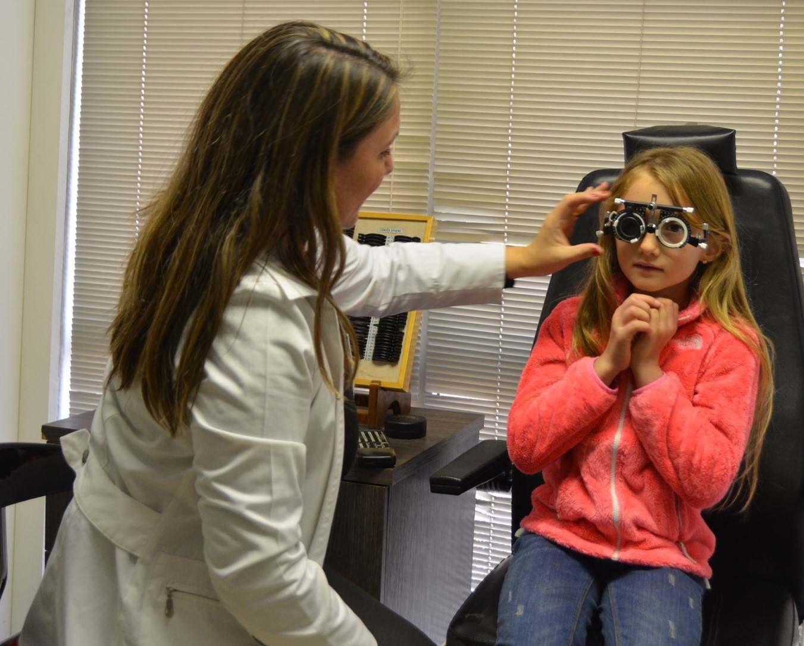

Nuestros Horarios de atencion son:
de Lunes a Viernes de 9 AM - 20 PM
y Sabados de 9 AM -
15 PM.
 +5634 234 5323
+5634 234 5323
 +5634 237 2029
+5634 237 2029
Dra. Andrea Mardones
Un alto porcentaje de niños entre 2 y 10 años nunca ha ido al oftalmólogo. Sin embargo la recomendacion es llevar al niño a revisiones desde los tres años. El objetivo principal es detectar y prevenir problemas visuales que podrían afectar al rendimiento escolar.
La visión es el principal órgano de recepción de información durante los años de formación para la mayoría de alumnos. Por ello es primordial que nuestros hijos no tengan problemas visuales que les dificulten la lectura o una visión nítida de la pizarra o las pantallas.
Realizar revisiones oculares durante estos años de crecimiento permiten descubrir trastornos visuales que necesitan tratamiento o corrección óptica. Aparte es importante que los padres estén atentos a ciertos comportamientos que podrían ser síntoma de algún problema visual.
Cuando un niño tiene deficit de atención o un bajo rendimiento escolar debemos ponernos en alerta. La causa subyacente podría ser algún tipo de problema de visión. Algunos síntomas de problemas de visión en niños que podemos detectar con facilidad en casa o en el día a día son los siguientes:
-Se aproxima mucho para leer o ver la pantalla.
-Cierra o se tapa un ojo para ver mejor.
-Ladea o inclina la cabeza para mirar.
-Fuerza los ojos para ver de lejos.
-Tiene uno o ambos ojos desviados.
-Confunde colores.
-La luz le molesta.
-Sufre dolores de cabeza con frecuencia.
-Sufre lagrimeo excesivo o tiene los ojos rojos y se frota con frecuencia.
-Tiene una mala caligrafía.
El estilo de vida de muchos niños y jóvenes de hoy en día conlleva un uso intensivo de la visión de cerca: manejo de móviles, tablet, ordenador, televisor, etc. En un artículo reciente comentamos el creciente número de personas miopes, y cómo esta patología estaba ligada a un mayor nivel educativo.
Si es necesaria una corrección óptica no tiene porqué preocuparse. Los lentes de hoy en día ofrecen diseños atractivos para los más pequeños. Luego a medida que crecen puede hacer uso también de las lentes de contacto. Más tarde, a partir de los 18 o 20 años ya se pueden plantear la posibilidad de operar su ojos de miopía, hipermetropía o astigmatismo.
En otras patologías como por ejemplo el estrabismo, donde los ojos no están bien alineados, conviene acudir al oftalmólogo para que no de lugar una ambliopía u ojo vago, que ocurre porque el cerebro percibe una imagen borrosa de uno de los ojos, por tanto lo ignora y se sirve de un solo ojo para poder ver bien.
Los problemas de miopía, hipermetropía, astigmatismo, estrabismo, y otras patologías las puede detectar el oftalmólogo en un examen visual rutinario.
Regresar